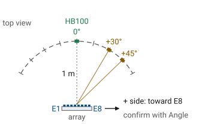

L18 Lab — Beam Steering#
Beam Steering
Put the peak at an angle by moving the source, then by applying a steer angle, and measure each beam.
L18 Lab · Antennas, Phased Arrays, and Radar Systems · Dr. Neil Rogers
Printing
To print the slides, switch to present mode and print: one slide a sheet, with room for notes. Print from read mode for the whole lesson.
Learning Objectives
- I can implement beam steering on the ADALM-PHASER and verify the steered pattern against theory.
The Big Picture
Two runs put the sweep’s peak at an angle.
Each reading checks a Part 1 prediction.
Steps |
Run |
Set |
|---|---|---|
1–9 |
Bring up |
source at 0° |
10–14 |
Move the source |
0°, 30°, 45° |
15–20 |
Apply |
15, 30, 45 |
Lesson 18 showed that the beam-sweep trace is the array factor seen from the source, so it peaks at the angle where the steered beam meets the source. Today you put that peak at the same angles two ways. In Run 1, Steps 10 to 14, Phase Control holds zero and you move the HB100 along an arc. In Run 2, Steps 15 to 20, the source stays at boresight and Apply in the Beam Steering section writes per-element offsets for the angle you type. At each angle you read the peak’s angle, its half-power width, and its Peak Gain, and Run 2 also reads back the Phase Control boxes. Run 1 fills Table A in Part 2 of the packet; Run 2 fills Table B and the Phase Control rows. You check every reading against the prediction you made in Part 1. Keep the sweep running throughout: the trace redraws on its own after you move the source or press Apply.
Predict First
Before you sweep, predict each trace, then check yourself. Choose a run and an angle from the table above and decide, before you press Show trace: where the peak lands, how wide the beam is next to the dashed boresight trace, how far the peak drops, and what E8 reads in Phase Control. Then show it. Any change to the run or the angle hides the trace again, so each guess comes first. The widget draws the ideal beam-sweep trace at 10.0 GHz, not at your kit’s frequency, with the element pattern at Lesson 18’s ideal bound, so its numbers are close to your Part 1 values but not equal to them. Its HPBW is read off the exact array factor, which runs a few tenths of a degree wider than the rule of Lesson 18’s ”Broadening and Scan Loss Versus Angle”.
Bring Up the Kit
HB100 at 0° on a 1 m arc centered between E4 and E5, at patch-row height.
Facing the patches, \(+\theta\) is to your left, toward E8.
Find HB100, Calibrate, then the Steering Angle preset.
Rx Gain for a −10 dBFS peak.

Set up the HB100 on a tripod about 1 m from the array face, at the height of the patch row, and lay a protractor arc of 1 m radius centered under the middle of the array, between E4 and E5. One meter clears Lesson 17’s far-field distance for this array, 0.88 m, which is enough for the angles and beamwidths. Center the arc on the array, not on the board’s edge: an arc centered 10 mm off the middle shifts the reference angle by 0.57°.
Lesson 18’s sign convention puts \(+\theta\) on the E8 end of the array. Facing the patch side, E1 is at the right end of the row and E8 at the left, as in the L17 Lab, so \(+\theta\) is to your left. The figure looks down from above, which puts E8 on the right. Step 13 confirms the sign on your kit.
Connect. Browse to your kit’s address from Lesson 17 and wait for the pill to read Connected.
Place the source. Set the powered HB100 1 m out at 0° on the arc, facing the array.
Find the source. Press Find HB100 and record the Signal Freq. If it is more than 10 MHz from the frequency you used in Part 1, redo your Phase Control row before Run 2: E8’s value moves about 0.6° for every 10 MHz, and Step 18 allows 1°.
Calibrate the array. Press Calibrate and wait for it to finish, with the source still at boresight. A source off boresight while Calibrate runs bakes a steering ramp into the calibration offsets, and every trace after it peaks in the wrong place.
Load the preset. Open the Lab Presets section and choose the Steering Angle preset. It loads a uniform taper on E1 to E8, zeros Phase Control, turns Use Bits on, and sets Signal BW to 10 MHz, so each sweep point is one 2.8125° phase step. It keeps the Signal Freq that Find HB100 stored and opens the FFT tab.
Set the gain. Set Rx Gain (dB) for an FFT peak of \(-10 \pm 3\) dBFS, as in the L17 Lab; the preset does not set it.
Mark the peak. Turn on Show Peak Angle Marker under Plot Options.
Check the tone. Press Start. The FFT tab should show one narrow tone within about ±1 MHz of 0 MHz, at least 20 dB above the floor. If the noise buries it, re-aim the HB100 or press Find HB100 again.
Open the trace. Open the Rectangular tab. The sweep keeps running from here on, and the button reads Stop.
Run 1: Move the Source
Reset Phase Control to zero.
Move the HB100 along the arc: 0°, then +30°, then +45°.
At each, record Angle, HPBW, and Peak Gain in Table A.
Freeze the 0° trace to compare against.
Read every half-power beamwidth as the distance between the two angles where the trace falls 3 dB below its own peak. The difference box is Angle minus the arc angle; compare it with the pass standard you sized in Part 1. Take every reading on the 1 m arc, and before each position check your Part 1 row for it.
Zero the offsets. Press Reset under Phase Control.
Source at 0°. Record Angle, the half-power beamwidth, and Peak Gain, then press Freeze to hold this trace. Compare the difference with your pass standard and the width with your Part 1 prediction.
Keep the reference. Leave the frozen trace on the plot for the next two positions, so you can compare each new trace with it.
Source at +30°. Move the HB100 along the arc to +30°, still 1 m out and facing the array, and record the same four boxes. If Angle reads near −30°, the source is on the negative side of the arc; move it across. Compare the width and the change in Peak Gain from the 0° row with your Part 1 predictions.
Source at +45°. Move it to +45° and record the same four, and compare them with your Part 1 predictions in the same way. If Angle jumps to about −90°, read the main lobe’s angle off the trace and record that. The sweep’s last steps take the element-to-element phase out to −227.8°, the same ramp as +132.2°, which points within a few degrees of a 45° source; the GUI plots all of them at −90°, so they read almost as high as the main lobe, and noise can lift one above it.
Run 2: Apply the Steer Angle
Move the HB100 back to 0° on the arc.
Apply 15, 30, and 45 on Uniform; record Angle, HPBW, and Peak Gain in Table B.
At Apply 30, copy the eight Phase Control boxes.
Reset Phase Control before you leave.
Source back to boresight. Move the HB100 back to 0° on the arc, 1 m out.
Apply 15. In Beam Steering, leave Taper on Uniform, enter 15 in Steer Angle (deg), and press Apply. Apply also rewrites Element Gains with the chosen taper, which is why it stays on Uniform. Record Angle, Peak Gain, and the half-power beamwidth. The difference box is Angle minus the Apply value; compare the readings with your Part 1 predictions.
Apply 30. Repeat for 30 and record the same four.
Read Phase Control. With Apply 30 still loaded, copy the eight Phase Control boxes beside your Part 1 prediction. Read the boxes, not the sliders: the sliders stop at ±180°, and Apply writes unwrapped values. The read-back should match your prediction to within 1° on every element; a difference that grows with element number means your Part 1 frequency differs from the Signal Freq on screen.
Apply 45. Repeat for 45. If Angle jumps to about −90°, record the main lobe’s angle off the trace, as in Step 14. Compare the Peak Gain with the 0° and 45° rows of Table A and with your Part 1 prediction.
Reset. Press Reset under Phase Control before you leave the station. The offsets stay loaded until you do, and they add to every sweep the next person runs.
No Hardware?
No hardware?
Open the hosted simulator at
livethisdream.github.io/phaser, the
same dashboard with nothing to install. At a station whose hardware has failed,
add ?sim=1 to the station’s URL or turn on Simulator Mode under
Configuration; an orange SIMULATION pill marks simulated data. With a
checkout of the Phaser repository, python phaser_headless.py --sim serves the
same page at http://localhost:8080.
The simulator holds its source at boresight, so Run 1’s moves have no simulated version. Run 2 works as written, and it is the rehearsal in Part 1 of the packet; Phase Control shows the same offsets as the hardware. The simulator has no element pattern and does not model Rx Gain (dB); its tone sits at −1 MHz; and Find HB100 and Calibrate run scripted scans.
Your Part 2 Entries
This frame collects every box you filled in on this page. Your entries stay in this browser only, saved as you type. Download my packet writes them into Part 2 of the blank packet and saves the PDF; do Parts 1 and 3 on paper or in the PDF viewer, and upload one PDF to Gradescope. If you have already typed Part 1 into the packet PDF, use Fill my own copy and choose that file instead: your Part 1 is kept, and Part 2 is added to it. Either way the result is locked, so finish any typing in the PDF first. Export entries saves a small backup file you can Import on another laptop or after clearing your browser. The boxes are optional: the blank packet is in the next frame, to fill on paper or in a PDF viewer instead.
Lab Packet
The L18 Lab packet is one submission for the whole lab, turned in complete before Lesson 19. It has three parts:
Part 1, Pre-Lab (individual, before the lab period, because you need it in class): the phase table at your kit’s frequency, what Phase Control will show, the beamwidths, the pass standard, and a rehearsal of Run 2 on the hosted simulator.
Part 2, Measurements (your own kit’s data, recorded in class): Tables A and B, from Run 1 and Run 2.
Part 3, Writeup (individual, after the lab): reconcile the measurements with the predictions, and three analysis problems.
For Part 3
Part 3 of the packet is the writeup, done after class with your Part 2 entries beside you. Its first question asks four things:
Compare each Table A difference with your pass standard. For a row outside it, name the error source in your budget most likely responsible, and say how you would check it.
Compare the 45° rows of Tables A and B: Angle, HPBW, and Peak Gain. Why do the angle and width agree while only the moved source loses level, and why can your 30° Peak Gain not show that drop?
Does the Phase Control read-back match your prediction? Explain the sign, and any difference.
Do the beamwidths match your predictions, and why does the lab quote them to the nearest degree?
Lesson 18’s ”Two Ways to Steer the Peak”, ”The Sign in Phase Control”, and ”How Close Is Close Enough” give the reasoning. The three analysis problems that follow read a classmate’s sweep, recover a steer angle from Phase Control, and compare two frozen traces.
Looking Ahead
The L19 Lab uses today’s skill: the peak of a sweep is a bearing, and bearings from several stations cross at the hidden HB100.